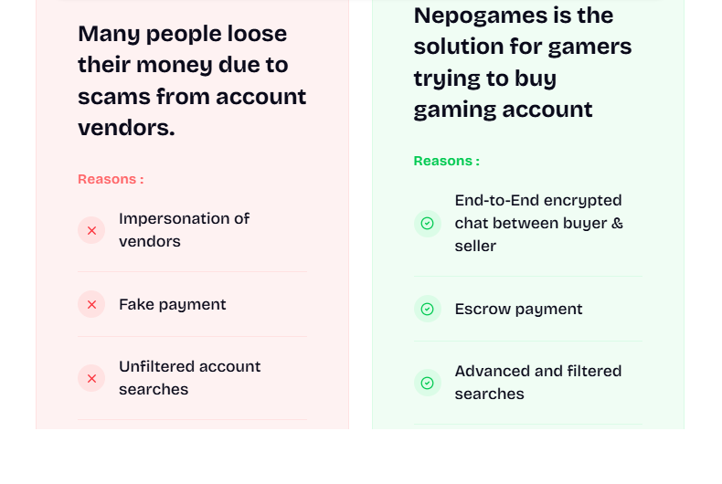
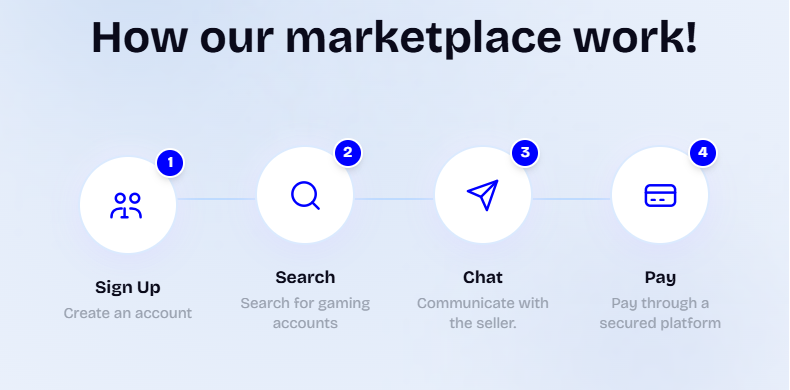

Nepogames
Nepogames is a marketplace for buying and selling gaming accounts, designed to make peer-to-peer trades feel safer.
What I did
I was the UI/UX designer for Nepogames, shaping the marketplace experience from finding an account to completing a trade.
The problem
Account trades can expose buyers and sellers to impersonation, fake payments, and scams. Unfiltered listings also make it harder to find the right account and trade with confidence.

How it works
Create an account, search and filter listings, then chat with the seller. Payment goes through the platform and stays protected until both parties confirm the deal.

What makes it safer
- Protected payments stay secured until both sides confirm.
- Encrypted chat keeps buyers and sellers communicating on-platform.
- Filtered search narrows accounts by game, price, rank, and more.
- 24/7 support is available when a trader needs help.